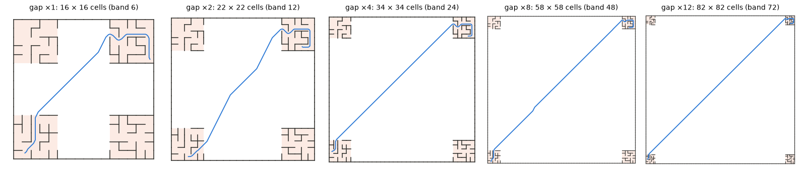
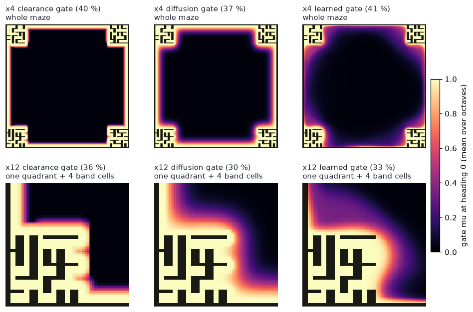
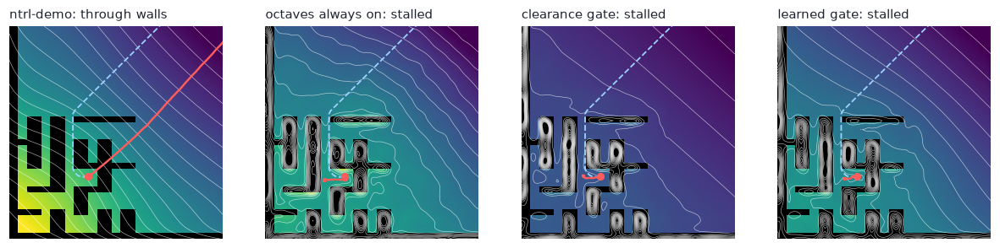

<title>2026-11-13 Embedding warp on gap mazes</title>
<meta name="claude:viewport-fit-sides" content="cover">
<style>
/* layout: one reading column, charts full width of it, figures edge to edge inside it */
:root{--bg:#f6f5f1;--surface:#ffffff;--fg:#1d1f24;--muted:#5d6068;--rule:#dcd9d0;--accent:#1c5cab;--chip:#e9e6dd;
 --s1:#2a78d6;--s2:#eb6834;--s3:#1baf7a;--s4:#eda100;--s5:#e87ba4;--s6:#6250d6;--ok:#1baf7a;--wall:#e34948;--stall:#b9b4a6;
 --display:"Source Serif 4",Georgia,"Times New Roman",serif;--body:"IBM Plex Sans","Helvetica Neue",Arial,sans-serif;--mono:"IBM Plex Mono",Menlo,Consolas,monospace}
@media (prefers-color-scheme: dark){:root:not([data-theme="light"]){--bg:#15171b;--surface:#1e2127;--fg:#ecebe6;--muted:#a9adb6;--rule:#343842;--accent:#86b6ef;--chip:#2a2e36;
 --s1:#3987e5;--s2:#d95926;--s3:#199e70;--s4:#c98500;--s5:#d55181;--s6:#9085e9;--ok:#199e70;--wall:#e66767;--stall:#6b6f78;color-scheme:dark}}
:root[data-theme="dark"]{--bg:#15171b;--surface:#1e2127;--fg:#ecebe6;--muted:#a9adb6;--rule:#343842;--accent:#86b6ef;--chip:#2a2e36;
 --s1:#3987e5;--s2:#d95926;--s3:#199e70;--s4:#c98500;--s5:#d55181;--s6:#9085e9;--ok:#199e70;--wall:#e66767;--stall:#6b6f78;color-scheme:dark}
body{background:var(--bg);color:var(--fg);font-family:var(--body);line-height:1.5;font-size:16px;padding-left:max(16px,env(safe-area-inset-left,0px));padding-right:max(16px,env(safe-area-inset-right,0px));padding-block:0 48px}
main{max-width:860px;margin:0 auto}
h1,h2,h3{font-family:var(--display);text-wrap:balance;line-height:1.15}
h1{font-size:2.1rem;margin:40px 0 6px;font-weight:600}
h2{font-size:1.45rem;margin:44px 0 10px;font-weight:600}
h3{font-size:1.1rem;margin:26px 0 6px;font-weight:600}
p,li{max-width:68ch}
.eyebrow{font-family:var(--mono);font-size:.78rem;letter-spacing:.08em;text-transform:uppercase;color:var(--muted);margin-top:28px}
.lede{font-size:1.12rem;max-width:66ch}
.verdict{display:grid;grid-template-columns:repeat(auto-fit,minmax(190px,1fr));gap:12px;margin:22px 0 8px}
.tile{background:var(--surface);border:1px solid var(--rule);border-radius:8px;padding:12px 14px}
.tile .n{font-family:var(--display);font-size:1.9rem;font-weight:600;font-variant-numeric:tabular-nums;line-height:1.1}
.tile .l{color:var(--muted);font-size:.86rem;margin-top:4px}
.chart{width:100%;height:auto;display:block;margin:10px 0 4px}
.chart .grid{stroke:var(--rule);stroke-width:1}
.chart .tick{fill:var(--muted);font-size:11px;font-family:var(--mono)}
.chart .lab{fill:var(--fg);font-size:12px}
.chart .val{fill:var(--fg);font-size:11px;font-family:var(--mono)}
figure{margin:18px 0}figure img{display:block;max-width:100%;border-radius:6px;border:1px solid var(--rule)}
figcaption{color:var(--muted);font-size:.88rem;margin-top:6px;max-width:72ch}
.cap{color:var(--muted);font-size:.88rem;max-width:72ch;margin:0 0 14px}
code{font-family:var(--mono);font-size:.86em;background:var(--chip);padding:1px 5px;border-radius:4px}
pre{font-family:var(--mono);font-size:.84rem;background:var(--surface);border:1px solid var(--rule);border-radius:6px;padding:12px 14px;overflow-x:auto}
details{margin:12px 0;border:1px solid var(--rule);border-radius:8px;background:var(--surface)}
summary{cursor:pointer;padding:10px 14px;font-weight:600}
details>div{padding:0 14px 14px;overflow-x:auto}
table{border-collapse:collapse;font-size:.84rem;font-variant-numeric:tabular-nums;min-width:600px}
th,td{padding:5px 8px;border-bottom:1px solid var(--rule);text-align:right;white-space:nowrap}
th:first-child,td:first-child,th:nth-child(2),td:nth-child(2){text-align:left}
td.ids{font-family:var(--mono);font-size:.72rem;white-space:normal;max-width:260px}
.legend{display:flex;flex-wrap:wrap;gap:10px 18px;font-size:.86rem;color:var(--muted);margin:4px 0 10px}
.legend span::before{content:"";display:inline-block;width:12px;height:12px;border-radius:3px;margin-right:6px;vertical-align:-1px;background:var(--c)}
.two{display:grid;grid-template-columns:repeat(auto-fit,minmax(300px,1fr));gap:16px}
.two>div{min-width:0}
a{color:var(--accent)}
.note{border-left:3px solid var(--accent);padding:4px 14px;margin:14px 0;color:var(--fg)}
@media (prefers-reduced-motion: reduce){*{scroll-behavior:auto}}
</style>
<link rel="stylesheet" href="https://fonts.googleapis.com/css2?family=Source+Serif+4:wght@600&family=IBM+Plex+Sans:wght@400;600&family=IBM+Plex+Mono&display=swap">
<main>
<p class="eyebrow">jeffrey/embed_warp · gap mazes on the 10 × 10 base · 2026-11-12/13</p>
<h1>Embedding-space gates on the widening gap</h1>
<p class="lede">The plus maze of the main study, cut down to the 10 × 10 maze's four 5 × 5 quadrants and pushed apart by an open band of 6, 12, 24, 48 and 72 cells (×1 … ×12), with the three gates you asked for on the same embedding map as before: the <b>constructed gate</b> from the environment (clearance band, open within half a cell of a wall, shut beyond 1.5 cells), the <b>diffusion gate</b> (heat from the free/obstacle boundary through free space), and the <b>gate learned from T</b> (sigmoid MLP on ntrl-demo's own features, trained only by the travel-time loss). Each against ntrl-demo and against the same octaves always on, three training seeds, the same 300 queries per maze and the same training pairs as ntrl-demo.</p>
<p class="lede"><b>What came out.</b> With the octaves scaled to the cell, every gate and the always-on control beat ntrl-demo at every gap over three seeds: by 8–9 points at ×1 (78–79 against 70 %), 13–20 at ×2, 10–12 at ×4, 4–6 at ×8 and 4–7 at ×12, and none of them gives up the open band, which is exactly what the C-space warps lost on these mazes. Two settings matter more than the choice of gate. The octaves have to follow the cell: ×2, ×4, ×8 at every gap fades to ntrl-demo's level at ×12 (26 %), the same octaves scaled by the maze side keep the gain (30–33 %). And the gate only pays once those octaves are high against the open band: at ×12 (top octave ×30) the clearance gate is ahead of the always-on control on each of the three seeds (33.3 against 30.2 %), the diffusion and learned gates by about a point; from ×1 to ×8 all four are within seed noise of each other. The learned gate again finds the geometry by itself. What none of them touches is the query between two quadrants (1–5 % from ×8 on): the field inside a quadrant does not know the way out to a far goal, and nine times more training pairs inside the quadrants did not change that either.</p>
<div class="verdict"><div class="tile"><div class="n">33.3 %</div><div class="l">gap ×12, clearance gate on per-cell octaves (ntrl-demo 26.4 %, same octaves always on 30.2 %), 3 seeds</div></div><div class="tile"><div class="n">64.9 %</div><div class="l">gap ×2, octaves ×2..×8 (ntrl-demo 45.1 %), 3 seeds</div></div><div class="tile"><div class="n">99 %</div><div class="l">open–open queries kept at ×12 (the constructed C-space warp trained on the same maze: 47 %)</div></div><div class="tile"><div class="n">3 %</div><div class="l">queries between two quadrants solved at ×12, every method (the part nothing here fixes)</div></div></div>
<figure><figcaption>The five mazes: the 10 × 10 maze cut into four 5 × 5 quadrants (every wall kept) and pushed apart by an open band of 6k cells, k = 1, 2, 4, 8, 12 (16 to 82 cells a side); one true path each. Same 300 queries per maze as the cross-warp study.</figcaption></figure>
<h2>1. Success as the gap grows</h2>
<p>Two octave families, each with the three gates and the always-on control. <b>Fixed</b>: ×2, ×4, ×8 at every gap, the plus maze's best setting. <b>Per cell</b>: the same three octaves times E / 22.1 (E = maze side in cells), so that a quadrant cell meets the spectrum it had on the 22 × 22 plus maze; the factor is 1.54 / 2.63 / 3.71 at ×4 / ×8 / ×12 (top octave ×12.3 / ×21 / ×29.7), and is clamped to 1 at ×1 and ×2, where the two families are the same runs.</p>
<p>At ×1 and ×2 the gain is large and the gate does not matter: always on 77.9 / 64.9 %, clearance 78.3 / 63.4, diffusion 78.7 / 60.4, learned 79.2 / 58.0, against ntrl-demo 70.2 / 45.1 (one training of the same recipe moves by up to 14 points at ×1, so these four are level). From ×4 the fixed octaves fall behind the per-cell ones (×8: 27–29 against 30–31 %; ×12: 26.2–26.6, ntrl-demo's level, against 30.2–33.3): the quadrant cells shrink in the encoder's box as the band grows, and an octave tied to the box no longer resolves them.</p>
<h3>Per-cell octaves: (×2, ×4, ×8) × E / 22.1</h3>
<svg viewBox="0 0 640 280" role="img" aria-label="success by gap, per-cell octaves" class="chart"><title>success by gap, per-cell octaves</title>
<line x1="44" x2="472" y1="238.0" y2="238.0" class="grid"/><text x="38" y="242.0" text-anchor="end" class="tick">0</text>
<line x1="44" x2="472" y1="183.0" y2="183.0" class="grid"/><text x="38" y="187.0" text-anchor="end" class="tick">25</text>
<line x1="44" x2="472" y1="128.0" y2="128.0" class="grid"/><text x="38" y="132.0" text-anchor="end" class="tick">50</text>
<line x1="44" x2="472" y1="73.0" y2="73.0" class="grid"/><text x="38" y="77.0" text-anchor="end" class="tick">75</text>
<line x1="44" x2="472" y1="18.0" y2="18.0" class="grid"/><text x="38" y="22.0" text-anchor="end" class="tick">100</text>
<text x="44.0" y="254" text-anchor="middle" class="tick">×1</text>
<text x="151.0" y="254" text-anchor="middle" class="tick">×2</text>
<text x="258.0" y="254" text-anchor="middle" class="tick">×4</text>
<text x="365.0" y="254" text-anchor="middle" class="tick">×8</text>
<text x="472.0" y="254" text-anchor="middle" class="tick">×12</text>
<text x="258.0" y="274" text-anchor="middle" class="tick">gap (band 6k cells; maze 16 → 82 cells)</text>
<path d="M44.0,48.1 L151.0,87.1 L258.0,175.1 L365.0,201.3 L472.0,198.6" fill="none" stroke="var(--muted)" stroke-width="1.5" stroke-dasharray="4 4"/>
<path d="M44.0,83.6 L151.0,138.8 L258.0,169.5 L365.0,182.3 L472.0,179.8" fill="none" stroke="var(--s1)" stroke-width="2" stroke-linejoin="round"/>
<circle cx="44.0" cy="83.6" r="4" fill="var(--s1)" stroke="var(--surface)" stroke-width="1.5"><title>ntrl-demo: 70.2 %</title></circle>
<circle cx="151.0" cy="138.8" r="4" fill="var(--s1)" stroke="var(--surface)" stroke-width="1.5"><title>ntrl-demo: 45.1 %</title></circle>
<circle cx="258.0" cy="169.5" r="4" fill="var(--s1)" stroke="var(--surface)" stroke-width="1.5"><title>ntrl-demo: 31.1 %</title></circle>
<circle cx="365.0" cy="182.3" r="4" fill="var(--s1)" stroke="var(--surface)" stroke-width="1.5"><title>ntrl-demo: 25.3 %</title></circle>
<circle cx="472.0" cy="179.8" r="4" fill="var(--s1)" stroke="var(--surface)" stroke-width="1.5"><title>ntrl-demo: 26.4 %</title></circle>
<path d="M44.0,66.6 L151.0,95.2 L258.0,148.7 L365.0,171.9 L472.0,171.6" fill="none" stroke="var(--s2)" stroke-width="2" stroke-linejoin="round"/>
<circle cx="44.0" cy="66.6" r="4" fill="var(--s2)" stroke="var(--surface)" stroke-width="1.5"><title>always on, per cell: 77.9 %</title></circle>
<circle cx="151.0" cy="95.2" r="4" fill="var(--s2)" stroke="var(--surface)" stroke-width="1.5"><title>always on, per cell: 64.9 %</title></circle>
<circle cx="258.0" cy="148.7" r="4" fill="var(--s2)" stroke="var(--surface)" stroke-width="1.5"><title>always on, per cell: 40.6 %</title></circle>
<circle cx="365.0" cy="171.9" r="4" fill="var(--s2)" stroke="var(--surface)" stroke-width="1.5"><title>always on, per cell: 30.0 %</title></circle>
<circle cx="472.0" cy="171.6" r="4" fill="var(--s2)" stroke="var(--surface)" stroke-width="1.5"><title>always on, per cell: 30.2 %</title></circle>
<path d="M44.0,65.7 L151.0,98.4 L258.0,145.8 L365.0,172.4 L472.0,164.7" fill="none" stroke="var(--s3)" stroke-width="2" stroke-linejoin="round"/>
<circle cx="44.0" cy="65.7" r="4" fill="var(--s3)" stroke="var(--surface)" stroke-width="1.5"><title>clearance gate, per cell: 78.3 %</title></circle>
<circle cx="151.0" cy="98.4" r="4" fill="var(--s3)" stroke="var(--surface)" stroke-width="1.5"><title>clearance gate, per cell: 63.4 %</title></circle>
<circle cx="258.0" cy="145.8" r="4" fill="var(--s3)" stroke="var(--surface)" stroke-width="1.5"><title>clearance gate, per cell: 41.9 %</title></circle>
<circle cx="365.0" cy="172.4" r="4" fill="var(--s3)" stroke="var(--surface)" stroke-width="1.5"><title>clearance gate, per cell: 29.8 %</title></circle>
<circle cx="472.0" cy="164.7" r="4" fill="var(--s3)" stroke="var(--surface)" stroke-width="1.5"><title>clearance gate, per cell: 33.3 %</title></circle>
<path d="M44.0,64.9 L151.0,105.2 L258.0,145.6 L365.0,170.7 L472.0,168.5" fill="none" stroke="var(--s6)" stroke-width="2" stroke-linejoin="round"/>
<circle cx="44.0" cy="64.9" r="4" fill="var(--s6)" stroke="var(--surface)" stroke-width="1.5"><title>diffusion gate, per cell: 78.7 %</title></circle>
<circle cx="151.0" cy="105.2" r="4" fill="var(--s6)" stroke="var(--surface)" stroke-width="1.5"><title>diffusion gate, per cell: 60.4 %</title></circle>
<circle cx="258.0" cy="145.6" r="4" fill="var(--s6)" stroke="var(--surface)" stroke-width="1.5"><title>diffusion gate, per cell: 42.0 %</title></circle>
<circle cx="365.0" cy="170.7" r="4" fill="var(--s6)" stroke="var(--surface)" stroke-width="1.5"><title>diffusion gate, per cell: 30.6 %</title></circle>
<circle cx="472.0" cy="168.5" r="4" fill="var(--s6)" stroke="var(--surface)" stroke-width="1.5"><title>diffusion gate, per cell: 31.6 %</title></circle>
<path d="M44.0,63.7 L151.0,110.5 L258.0,142.1 L365.0,169.6 L472.0,169.3" fill="none" stroke="var(--s5)" stroke-width="2" stroke-linejoin="round"/>
<circle cx="44.0" cy="63.7" r="4" fill="var(--s5)" stroke="var(--surface)" stroke-width="1.5"><title>learned gate, per cell: 79.2 %</title></circle>
<circle cx="151.0" cy="110.5" r="4" fill="var(--s5)" stroke="var(--surface)" stroke-width="1.5"><title>learned gate, per cell: 58.0 %</title></circle>
<circle cx="258.0" cy="142.1" r="4" fill="var(--s5)" stroke="var(--surface)" stroke-width="1.5"><title>learned gate, per cell: 43.6 %</title></circle>
<circle cx="365.0" cy="169.6" r="4" fill="var(--s5)" stroke="var(--surface)" stroke-width="1.5"><title>learned gate, per cell: 31.1 %</title></circle>
<circle cx="472.0" cy="169.3" r="4" fill="var(--s5)" stroke="var(--surface)" stroke-width="1.5"><title>learned gate, per cell: 31.2 %</title></circle>
<text x="480" y="168.7" class="lab" fill="var(--s3)" style="fill:var(--s3)">clearance gate, per cell</text>
<text x="480" y="181.7" class="lab" fill="var(--s6)" style="fill:var(--s6)">diffusion gate, per cell</text>
<text x="480" y="194.7" class="lab" fill="var(--s5)" style="fill:var(--s5)">learned gate, per cell</text>
<text x="480" y="207.7" class="lab" fill="var(--s2)" style="fill:var(--s2)">always on, per cell</text>
<text x="480" y="220.7" class="lab" fill="var(--s1)" style="fill:var(--s1)">ntrl-demo</text>
<text x="480" y="233.7" class="lab" fill="var(--muted)" style="fill:var(--muted)">C-space warp</text>
</svg>
<h3>Fixed octaves: ×2, ×4, ×8 at every gap</h3>
<svg viewBox="0 0 640 280" role="img" aria-label="success by gap, fixed octaves" class="chart"><title>success by gap, fixed octaves</title>
<line x1="44" x2="472" y1="238.0" y2="238.0" class="grid"/><text x="38" y="242.0" text-anchor="end" class="tick">0</text>
<line x1="44" x2="472" y1="183.0" y2="183.0" class="grid"/><text x="38" y="187.0" text-anchor="end" class="tick">25</text>
<line x1="44" x2="472" y1="128.0" y2="128.0" class="grid"/><text x="38" y="132.0" text-anchor="end" class="tick">50</text>
<line x1="44" x2="472" y1="73.0" y2="73.0" class="grid"/><text x="38" y="77.0" text-anchor="end" class="tick">75</text>
<line x1="44" x2="472" y1="18.0" y2="18.0" class="grid"/><text x="38" y="22.0" text-anchor="end" class="tick">100</text>
<text x="44.0" y="254" text-anchor="middle" class="tick">×1</text>
<text x="151.0" y="254" text-anchor="middle" class="tick">×2</text>
<text x="258.0" y="254" text-anchor="middle" class="tick">×4</text>
<text x="365.0" y="254" text-anchor="middle" class="tick">×8</text>
<text x="472.0" y="254" text-anchor="middle" class="tick">×12</text>
<text x="258.0" y="274" text-anchor="middle" class="tick">gap (band 6k cells; maze 16 → 82 cells)</text>
<path d="M44.0,48.1 L151.0,87.1 L258.0,175.1 L365.0,201.3 L472.0,198.6" fill="none" stroke="var(--muted)" stroke-width="1.5" stroke-dasharray="4 4"/>
<path d="M44.0,83.6 L151.0,138.8 L258.0,169.5 L365.0,182.3 L472.0,179.8" fill="none" stroke="var(--s1)" stroke-width="2" stroke-linejoin="round"/>
<circle cx="44.0" cy="83.6" r="4" fill="var(--s1)" stroke="var(--surface)" stroke-width="1.5"><title>ntrl-demo: 70.2 %</title></circle>
<circle cx="151.0" cy="138.8" r="4" fill="var(--s1)" stroke="var(--surface)" stroke-width="1.5"><title>ntrl-demo: 45.1 %</title></circle>
<circle cx="258.0" cy="169.5" r="4" fill="var(--s1)" stroke="var(--surface)" stroke-width="1.5"><title>ntrl-demo: 31.1 %</title></circle>
<circle cx="365.0" cy="182.3" r="4" fill="var(--s1)" stroke="var(--surface)" stroke-width="1.5"><title>ntrl-demo: 25.3 %</title></circle>
<circle cx="472.0" cy="179.8" r="4" fill="var(--s1)" stroke="var(--surface)" stroke-width="1.5"><title>ntrl-demo: 26.4 %</title></circle>
<path d="M44.0,66.6 L151.0,95.2 L258.0,153.3 L365.0,176.2 L472.0,179.4" fill="none" stroke="var(--s2)" stroke-width="2" stroke-linejoin="round"/>
<circle cx="44.0" cy="66.6" r="4" fill="var(--s2)" stroke="var(--surface)" stroke-width="1.5"><title>always on, x2..x8: 77.9 %</title></circle>
<circle cx="151.0" cy="95.2" r="4" fill="var(--s2)" stroke="var(--surface)" stroke-width="1.5"><title>always on, x2..x8: 64.9 %</title></circle>
<circle cx="258.0" cy="153.3" r="4" fill="var(--s2)" stroke="var(--surface)" stroke-width="1.5"><title>always on, x2..x8: 38.5 %</title></circle>
<circle cx="365.0" cy="176.2" r="4" fill="var(--s2)" stroke="var(--surface)" stroke-width="1.5"><title>always on, x2..x8: 28.1 %</title></circle>
<circle cx="472.0" cy="179.4" r="4" fill="var(--s2)" stroke="var(--surface)" stroke-width="1.5"><title>always on, x2..x8: 26.6 %</title></circle>
<path d="M44.0,65.7 L151.0,98.4 L258.0,153.8 L365.0,174.9 L472.0,180.2" fill="none" stroke="var(--s3)" stroke-width="2" stroke-linejoin="round"/>
<circle cx="44.0" cy="65.7" r="4" fill="var(--s3)" stroke="var(--surface)" stroke-width="1.5"><title>clearance gate, x2..x8: 78.3 %</title></circle>
<circle cx="151.0" cy="98.4" r="4" fill="var(--s3)" stroke="var(--surface)" stroke-width="1.5"><title>clearance gate, x2..x8: 63.4 %</title></circle>
<circle cx="258.0" cy="153.8" r="4" fill="var(--s3)" stroke="var(--surface)" stroke-width="1.5"><title>clearance gate, x2..x8: 38.3 %</title></circle>
<circle cx="365.0" cy="174.9" r="4" fill="var(--s3)" stroke="var(--surface)" stroke-width="1.5"><title>clearance gate, x2..x8: 28.7 %</title></circle>
<circle cx="472.0" cy="180.2" r="4" fill="var(--s3)" stroke="var(--surface)" stroke-width="1.5"><title>clearance gate, x2..x8: 26.3 %</title></circle>
<path d="M44.0,64.9 L151.0,105.2 L258.0,146.0 L365.0,177.6 L472.0,179.4" fill="none" stroke="var(--s6)" stroke-width="2" stroke-linejoin="round"/>
<circle cx="44.0" cy="64.9" r="4" fill="var(--s6)" stroke="var(--surface)" stroke-width="1.5"><title>diffusion gate, x2..x8: 78.7 %</title></circle>
<circle cx="151.0" cy="105.2" r="4" fill="var(--s6)" stroke="var(--surface)" stroke-width="1.5"><title>diffusion gate, x2..x8: 60.4 %</title></circle>
<circle cx="258.0" cy="146.0" r="4" fill="var(--s6)" stroke="var(--surface)" stroke-width="1.5"><title>diffusion gate, x2..x8: 41.8 %</title></circle>
<circle cx="365.0" cy="177.6" r="4" fill="var(--s6)" stroke="var(--surface)" stroke-width="1.5"><title>diffusion gate, x2..x8: 27.4 %</title></circle>
<circle cx="472.0" cy="179.4" r="4" fill="var(--s6)" stroke="var(--surface)" stroke-width="1.5"><title>diffusion gate, x2..x8: 26.6 %</title></circle>
<path d="M44.0,63.7 L151.0,110.5 L258.0,147.1 L365.0,177.3 L472.0,180.3" fill="none" stroke="var(--s5)" stroke-width="2" stroke-linejoin="round"/>
<circle cx="44.0" cy="63.7" r="4" fill="var(--s5)" stroke="var(--surface)" stroke-width="1.5"><title>learned gate, x2..x8: 79.2 %</title></circle>
<circle cx="151.0" cy="110.5" r="4" fill="var(--s5)" stroke="var(--surface)" stroke-width="1.5"><title>learned gate, x2..x8: 58.0 %</title></circle>
<circle cx="258.0" cy="147.1" r="4" fill="var(--s5)" stroke="var(--surface)" stroke-width="1.5"><title>learned gate, x2..x8: 41.3 %</title></circle>
<circle cx="365.0" cy="177.3" r="4" fill="var(--s5)" stroke="var(--surface)" stroke-width="1.5"><title>learned gate, x2..x8: 27.6 %</title></circle>
<circle cx="472.0" cy="180.3" r="4" fill="var(--s5)" stroke="var(--surface)" stroke-width="1.5"><title>learned gate, x2..x8: 26.2 %</title></circle>
<text x="480" y="183.4" class="lab" fill="var(--s2)" style="fill:var(--s2)">always on, x2..x8</text>
<text x="480" y="196.4" class="lab" fill="var(--s6)" style="fill:var(--s6)">diffusion gate, x2..x8</text>
<text x="480" y="209.4" class="lab" fill="var(--s1)" style="fill:var(--s1)">ntrl-demo</text>
<text x="480" y="222.4" class="lab" fill="var(--s3)" style="fill:var(--s3)">clearance gate, x2..x8</text>
<text x="480" y="235.4" class="lab" fill="var(--s5)" style="fill:var(--s5)">learned gate, x2..x8</text>
<text x="480" y="248.4" class="lab" fill="var(--muted)" style="fill:var(--muted)">C-space warp</text>
</svg>
<p class="cap">Dashed: the constructed C-space warp of the cross-warp study trained on the real maze with the same pairs (training seed 87358), the fair warp reference. The fields trained and planned on the warped maze with pairs drawn there (85 % at ×12 for the constructed warp, 93 % for the learned line warp) are a different problem and not drawn: they are not asked for the robot's real travel time across the band. ntrl-demo at ×2 is 45.1 % here (3 seeds on this machine's GPUs) and 52.0 % in the cross-warp run of seed 87358 on the other card; ×4 / ×8 / ×12 agree to the decimal.</p>
<details><summary>Success per gap, every method, per training seed</summary><div><table><thead><tr><th>method</th><th>×1</th><th>×2</th><th>×4</th><th>×8</th><th>×12</th></tr></thead><tbody><tr><td>ntrl-demo</td><td>70.2<br><small>68 / 72 / 70</small></td><td>45.1<br><small>44 / 45 / 46</small></td><td>31.1<br><small>28 / 33 / 32</small></td><td>25.3<br><small>25 / 26 / 25</small></td><td>26.4<br><small>25 / 27 / 27</small></td></tr><tr><td>always on, x2..x8</td><td>77.9<br><small>87 / 74 / 73</small></td><td>64.9<br><small>59 / 69 / 67</small></td><td>38.5<br><small>37 / 40 / 38</small></td><td>28.1<br><small>27 / 27 / 30</small></td><td>26.6<br><small>28 / 26 / 26</small></td></tr><tr><td>clearance gate, x2..x8</td><td>78.3<br><small>79 / 77 / 79</small></td><td>63.4<br><small>67 / 58 / 65</small></td><td>38.3<br><small>37 / 40 / 37</small></td><td>28.7<br><small>31 / 27 / 27</small></td><td>26.3<br><small>27 / 26 / 26</small></td></tr><tr><td>diffusion gate, x2..x8</td><td>78.7<br><small>81 / 80 / 76</small></td><td>60.4<br><small>71 / 55 / 56</small></td><td>41.8<br><small>43 / 42 / 40</small></td><td>27.4<br><small>29 / 26 / 28</small></td><td>26.6<br><small>29 / 25 / 26</small></td></tr><tr><td>learned gate, x2..x8</td><td>79.2<br><small>83 / 82 / 73</small></td><td>58.0<br><small>64 / 55 / 55</small></td><td>41.3<br><small>39 / 38 / 47</small></td><td>27.6<br><small>26 / 29 / 28</small></td><td>26.2<br><small>25 / 27 / 27</small></td></tr><tr><td>always on, per cell</td><td>77.9<br><small>87 / 74 / 73</small></td><td>64.9<br><small>59 / 69 / 67</small></td><td>40.6<br><small>46 / 39 / 37</small></td><td>30.0<br><small>29 / 31 / 31</small></td><td>30.2<br><small>31 / 29 / 31</small></td></tr><tr><td>clearance gate, per cell</td><td>78.3<br><small>79 / 77 / 79</small></td><td>63.4<br><small>67 / 58 / 65</small></td><td>41.9<br><small>43 / 43 / 40</small></td><td>29.8<br><small>28 / 30 / 31</small></td><td>33.3<br><small>33 / 31 / 36</small></td></tr><tr><td>diffusion gate, per cell</td><td>78.7<br><small>81 / 80 / 76</small></td><td>60.4<br><small>71 / 55 / 56</small></td><td>42.0<br><small>45 / 45 / 37</small></td><td>30.6<br><small>31 / 31 / 30</small></td><td>31.6<br><small>32 / 32 / 30</small></td></tr><tr><td>learned gate, per cell</td><td>79.2<br><small>83 / 82 / 73</small></td><td>58.0<br><small>64 / 55 / 55</small></td><td>43.6<br><small>45 / 45 / 41</small></td><td>31.1<br><small>31 / 31 / 31</small></td><td>31.2<br><small>31 / 30 / 33</small></td></tr></tbody></table></div></details>
<h2>2. Which queries</h2>
<p>By query kind, the embeddings gain in the queries that stay in one quadrant or go between a quadrant and the band, and keep the band itself: at ×12 the clearance gate solves 35 % of same-quadrant queries (ntrl-demo 12 %) and 26 % of quadrant–open ones (20 %), and 99 % of open–open ones. The constructed C-space warp of the cross-warp study, trained on the same maze with the same pairs, reached the same-quadrant level (34 %) only by losing the band (open–open 47 %) and solved 17.9 % in total (training seed 87358).</p>
<p>Queries between two quadrants are the wall nothing here passes: adjacent 3–5 %, diagonal 0–1 % at ×12, for every gate, for always on and for ntrl-demo. ntrl-demo "solves" none of its failures by stalling: at ×12 1,980 of its 1,986 failed runs reach the goal through walls. The embeddings stop at the walls instead (44–48 runs through a wall, 1,750–1,840 never arrive).</p>
<h3>×2</h3>
<svg viewBox="0 0 640 409" role="img" aria-label="gap x2: success by query kind" class="chart"><title>gap x2: success by query kind</title>
<line x1="150.0" x2="150.0" y1="10" y2="385" class="grid"/><text x="150.0" y="399" text-anchor="middle" class="tick">0</text>
<line x1="260.0" x2="260.0" y1="10" y2="385" class="grid"/><text x="260.0" y="399" text-anchor="middle" class="tick">25</text>
<line x1="370.0" x2="370.0" y1="10" y2="385" class="grid"/><text x="370.0" y="399" text-anchor="middle" class="tick">50</text>
<line x1="480.0" x2="480.0" y1="10" y2="385" class="grid"/><text x="480.0" y="399" text-anchor="middle" class="tick">75</text>
<line x1="590.0" x2="590.0" y1="10" y2="385" class="grid"/><text x="590.0" y="399" text-anchor="middle" class="tick">100</text>
<text x="142" y="46.5" text-anchor="end" class="lab">same quadrant</text>
<rect x="150" y="11" width="172.7" height="11" rx="2" fill="var(--s1)"><title>ntrl-demo, same quadrant: 39 %</title></rect>
<text x="326.7" y="20" class="val">39</text>
<rect x="150" y="24" width="264.8" height="11" rx="2" fill="var(--s2)"><title>always on, per cell, same quadrant: 60 %</title></rect>
<text x="418.8" y="33" class="val">60</text>
<rect x="150" y="37" width="267.3" height="11" rx="2" fill="var(--s3)"><title>clearance gate, per cell, same quadrant: 61 %</title></rect>
<text x="421.3" y="46" class="val">61</text>
<rect x="150" y="50" width="273.8" height="11" rx="2" fill="var(--s6)"><title>diffusion gate, per cell, same quadrant: 62 %</title></rect>
<text x="427.8" y="59" class="val">62</text>
<rect x="150" y="63" width="250.1" height="11" rx="2" fill="var(--s5)"><title>learned gate, per cell, same quadrant: 57 %</title></rect>
<text x="404.1" y="72" class="val">57</text>
<text x="142" y="121.5" text-anchor="end" class="lab">adjacent quadrants</text>
<rect x="150" y="86" width="83.1" height="11" rx="2" fill="var(--s1)"><title>ntrl-demo, adjacent quadrants: 19 %</title></rect>
<text x="237.1" y="95" class="val">19</text>
<rect x="150" y="99" width="188.2" height="11" rx="2" fill="var(--s2)"><title>always on, per cell, adjacent quadrants: 43 %</title></rect>
<text x="342.2" y="108" class="val">43</text>
<rect x="150" y="112" width="176.0" height="11" rx="2" fill="var(--s3)"><title>clearance gate, per cell, adjacent quadrants: 40 %</title></rect>
<text x="330.0" y="121" class="val">40</text>
<rect x="150" y="125" width="154.8" height="11" rx="2" fill="var(--s6)"><title>diffusion gate, per cell, adjacent quadrants: 35 %</title></rect>
<text x="308.8" y="134" class="val">35</text>
<rect x="150" y="138" width="128.7" height="11" rx="2" fill="var(--s5)"><title>learned gate, per cell, adjacent quadrants: 29 %</title></rect>
<text x="282.7" y="147" class="val">29</text>
<text x="142" y="196.5" text-anchor="end" class="lab">diagonal quadrants</text>
<rect x="150" y="161" width="111.6" height="11" rx="2" fill="var(--s1)"><title>ntrl-demo, diagonal quadrants: 25 %</title></rect>
<text x="265.6" y="170" class="val">25</text>
<rect x="150" y="174" width="229.8" height="11" rx="2" fill="var(--s2)"><title>always on, per cell, diagonal quadrants: 52 %</title></rect>
<text x="383.8" y="183" class="val">52</text>
<rect x="150" y="187" width="234.7" height="11" rx="2" fill="var(--s3)"><title>clearance gate, per cell, diagonal quadrants: 53 %</title></rect>
<text x="388.7" y="196" class="val">53</text>
<rect x="150" y="200" width="196.4" height="11" rx="2" fill="var(--s6)"><title>diffusion gate, per cell, diagonal quadrants: 45 %</title></rect>
<text x="350.4" y="209" class="val">45</text>
<rect x="150" y="213" width="185.8" height="11" rx="2" fill="var(--s5)"><title>learned gate, per cell, diagonal quadrants: 42 %</title></rect>
<text x="339.8" y="222" class="val">42</text>
<text x="142" y="271.5" text-anchor="end" class="lab">quadrant - open</text>
<rect x="150" y="236" width="186.6" height="11" rx="2" fill="var(--s1)"><title>ntrl-demo, quadrant - open: 42 %</title></rect>
<text x="340.6" y="245" class="val">42</text>
<rect x="150" y="249" width="304.7" height="11" rx="2" fill="var(--s2)"><title>always on, per cell, quadrant - open: 69 %</title></rect>
<text x="458.7" y="258" class="val">69</text>
<rect x="150" y="262" width="278.7" height="11" rx="2" fill="var(--s3)"><title>clearance gate, per cell, quadrant - open: 63 %</title></rect>
<text x="432.7" y="271" class="val">63</text>
<rect x="150" y="275" width="263.2" height="11" rx="2" fill="var(--s6)"><title>diffusion gate, per cell, quadrant - open: 60 %</title></rect>
<text x="417.2" y="284" class="val">60</text>
<rect x="150" y="288" width="271.3" height="11" rx="2" fill="var(--s5)"><title>learned gate, per cell, quadrant - open: 62 %</title></rect>
<text x="425.3" y="297" class="val">62</text>
<text x="142" y="346.5" text-anchor="end" class="lab">open - open</text>
<rect x="150" y="311" width="437.6" height="11" rx="2" fill="var(--s1)"><title>ntrl-demo, open - open: 99 %</title></rect>
<text x="591.6" y="320" class="val">99</text>
<rect x="150" y="324" width="440.0" height="11" rx="2" fill="var(--s2)"><title>always on, per cell, open - open: 100 %</title></rect>
<text x="594.0" y="333" class="val">100</text>
<rect x="150" y="337" width="439.2" height="11" rx="2" fill="var(--s3)"><title>clearance gate, per cell, open - open: 100 %</title></rect>
<text x="593.2" y="346" class="val">100</text>
<rect x="150" y="350" width="440.0" height="11" rx="2" fill="var(--s6)"><title>diffusion gate, per cell, open - open: 100 %</title></rect>
<text x="594.0" y="359" class="val">100</text>
<rect x="150" y="363" width="439.2" height="11" rx="2" fill="var(--s5)"><title>learned gate, per cell, open - open: 100 %</title></rect>
<text x="593.2" y="372" class="val">100</text>
</svg>
<h3>×12</h3>
<svg viewBox="0 0 640 409" role="img" aria-label="gap x12: success by query kind" class="chart"><title>gap x12: success by query kind</title>
<line x1="150.0" x2="150.0" y1="10" y2="385" class="grid"/><text x="150.0" y="399" text-anchor="middle" class="tick">0</text>
<line x1="260.0" x2="260.0" y1="10" y2="385" class="grid"/><text x="260.0" y="399" text-anchor="middle" class="tick">25</text>
<line x1="370.0" x2="370.0" y1="10" y2="385" class="grid"/><text x="370.0" y="399" text-anchor="middle" class="tick">50</text>
<line x1="480.0" x2="480.0" y1="10" y2="385" class="grid"/><text x="480.0" y="399" text-anchor="middle" class="tick">75</text>
<line x1="590.0" x2="590.0" y1="10" y2="385" class="grid"/><text x="590.0" y="399" text-anchor="middle" class="tick">100</text>
<text x="142" y="46.5" text-anchor="end" class="lab">same quadrant</text>
<rect x="150" y="11" width="53.0" height="11" rx="2" fill="var(--s1)"><title>ntrl-demo, same quadrant: 12 %</title></rect>
<text x="207.0" y="20" class="val">12</text>
<rect x="150" y="24" width="117.3" height="11" rx="2" fill="var(--s2)"><title>always on, per cell, same quadrant: 27 %</title></rect>
<text x="271.3" y="33" class="val">27</text>
<rect x="150" y="37" width="155.6" height="11" rx="2" fill="var(--s3)"><title>clearance gate, per cell, same quadrant: 35 %</title></rect>
<text x="309.6" y="46" class="val">35</text>
<rect x="150" y="50" width="132.8" height="11" rx="2" fill="var(--s6)"><title>diffusion gate, per cell, same quadrant: 30 %</title></rect>
<text x="286.8" y="59" class="val">30</text>
<rect x="150" y="63" width="141.8" height="11" rx="2" fill="var(--s5)"><title>learned gate, per cell, same quadrant: 32 %</title></rect>
<text x="295.8" y="72" class="val">32</text>
<text x="142" y="121.5" text-anchor="end" class="lab">adjacent quadrants</text>
<rect x="150" y="86" width="5.7" height="11" rx="2" fill="var(--s1)"><title>ntrl-demo, adjacent quadrants: 1 %</title></rect>
<text x="159.7" y="95" class="val">1</text>
<rect x="150" y="99" width="13.9" height="11" rx="2" fill="var(--s2)"><title>always on, per cell, adjacent quadrants: 3 %</title></rect>
<text x="167.9" y="108" class="val">3</text>
<rect x="150" y="112" width="22.0" height="11" rx="2" fill="var(--s3)"><title>clearance gate, per cell, adjacent quadrants: 5 %</title></rect>
<text x="176.0" y="121" class="val">5</text>
<rect x="150" y="125" width="17.1" height="11" rx="2" fill="var(--s6)"><title>diffusion gate, per cell, adjacent quadrants: 4 %</title></rect>
<text x="171.1" y="134" class="val">4</text>
<rect x="150" y="138" width="17.1" height="11" rx="2" fill="var(--s5)"><title>learned gate, per cell, adjacent quadrants: 4 %</title></rect>
<text x="171.1" y="147" class="val">4</text>
<text x="142" y="196.5" text-anchor="end" class="lab">diagonal quadrants</text>
<rect x="150" y="161" width="0.5" height="11" rx="2" fill="var(--s1)"><title>ntrl-demo, diagonal quadrants: 0 %</title></rect>
<text x="154.0" y="170" class="val">0</text>
<rect x="150" y="174" width="1.6" height="11" rx="2" fill="var(--s2)"><title>always on, per cell, diagonal quadrants: 0 %</title></rect>
<text x="155.6" y="183" class="val">0</text>
<rect x="150" y="187" width="5.7" height="11" rx="2" fill="var(--s3)"><title>clearance gate, per cell, diagonal quadrants: 1 %</title></rect>
<text x="159.7" y="196" class="val">1</text>
<rect x="150" y="200" width="5.7" height="11" rx="2" fill="var(--s6)"><title>diffusion gate, per cell, diagonal quadrants: 1 %</title></rect>
<text x="159.7" y="209" class="val">1</text>
<rect x="150" y="213" width="4.9" height="11" rx="2" fill="var(--s5)"><title>learned gate, per cell, diagonal quadrants: 1 %</title></rect>
<text x="158.9" y="222" class="val">1</text>
<text x="142" y="271.5" text-anchor="end" class="lab">quadrant - open</text>
<rect x="150" y="236" width="88.0" height="11" rx="2" fill="var(--s1)"><title>ntrl-demo, quadrant - open: 20 %</title></rect>
<text x="242.0" y="245" class="val">20</text>
<rect x="150" y="249" width="93.7" height="11" rx="2" fill="var(--s2)"><title>always on, per cell, quadrant - open: 21 %</title></rect>
<text x="247.7" y="258" class="val">21</text>
<rect x="150" y="262" width="112.4" height="11" rx="2" fill="var(--s3)"><title>clearance gate, per cell, quadrant - open: 26 %</title></rect>
<text x="266.4" y="271" class="val">26</text>
<rect x="150" y="275" width="100.2" height="11" rx="2" fill="var(--s6)"><title>diffusion gate, per cell, quadrant - open: 23 %</title></rect>
<text x="254.2" y="284" class="val">23</text>
<rect x="150" y="288" width="83.1" height="11" rx="2" fill="var(--s5)"><title>learned gate, per cell, quadrant - open: 19 %</title></rect>
<text x="237.1" y="297" class="val">19</text>
<text x="142" y="346.5" text-anchor="end" class="lab">open - open</text>
<rect x="150" y="311" width="435.1" height="11" rx="2" fill="var(--s1)"><title>ntrl-demo, open - open: 99 %</title></rect>
<text x="589.1" y="320" class="val">99</text>
<rect x="150" y="324" width="437.6" height="11" rx="2" fill="var(--s2)"><title>always on, per cell, open - open: 99 %</title></rect>
<text x="591.6" y="333" class="val">99</text>
<rect x="150" y="337" width="437.6" height="11" rx="2" fill="var(--s3)"><title>clearance gate, per cell, open - open: 99 %</title></rect>
<text x="591.6" y="346" class="val">99</text>
<rect x="150" y="350" width="439.2" height="11" rx="2" fill="var(--s6)"><title>diffusion gate, per cell, open - open: 100 %</title></rect>
<text x="593.2" y="359" class="val">100</text>
<rect x="150" y="363" width="440.0" height="11" rx="2" fill="var(--s5)"><title>learned gate, per cell, open - open: 100 %</title></rect>
<text x="594.0" y="372" class="val">100</text>
</svg>
<div class="legend"><span style="--c:var(--s1)">ntrl-demo</span><span style="--c:var(--s2)">always on, per cell</span><span style="--c:var(--s3)">clearance gate, per cell</span><span style="--c:var(--s6)">diffusion gate, per cell</span><span style="--c:var(--s5)">learned gate, per cell</span></div>
<h3>How runs end</h3>
<svg viewBox="0 0 640 184" role="img" aria-label="gap x2: how runs end" class="chart"><title>gap x2: how runs end</title>
<text x="222" y="45.0" text-anchor="end" class="lab">×2 ntrl-demo</text>
<rect x="230.0" y="33" width="176.6" height="16" rx="2" fill="var(--ok)"><title>solved 1217/2700</title></rect>
<rect x="408.6" y="33" width="91.8" height="16" rx="2" fill="var(--wall)"><title>arrived through a wall 643</title></rect>
<rect x="502.4" y="33" width="121.6" height="16" rx="2" fill="var(--stall)"><title>never arrived (stall) 840</title></rect>
<text x="403.6" y="45.0" text-anchor="end" class="val" fill="var(--surface)">45</text>
<text x="222" y="71.0" text-anchor="end" class="lab">×2 always on, per cell</text>
<rect x="230.0" y="59" width="254.7" height="16" rx="2" fill="var(--ok)"><title>solved 1752/2700</title></rect>
<rect x="486.7" y="59" width="24.6" height="16" rx="2" fill="var(--wall)"><title>arrived through a wall 182</title></rect>
<rect x="513.2" y="59" width="110.8" height="16" rx="2" fill="var(--stall)"><title>never arrived (stall) 766</title></rect>
<text x="481.7" y="71.0" text-anchor="end" class="val" fill="var(--surface)">65</text>
<text x="222" y="97.0" text-anchor="end" class="lab">×2 clearance gate, per cell</text>
<rect x="230.0" y="85" width="249.0" height="16" rx="2" fill="var(--ok)"><title>solved 1713/2700</title></rect>
<rect x="481.0" y="85" width="20.5" height="16" rx="2" fill="var(--wall)"><title>arrived through a wall 154</title></rect>
<rect x="503.4" y="85" width="120.6" height="16" rx="2" fill="var(--stall)"><title>never arrived (stall) 833</title></rect>
<text x="476.0" y="97.0" text-anchor="end" class="val" fill="var(--surface)">63</text>
<text x="222" y="123.0" text-anchor="end" class="lab">×2 diffusion gate, per cell</text>
<rect x="230.0" y="111" width="236.9" height="16" rx="2" fill="var(--ok)"><title>solved 1630/2700</title></rect>
<rect x="468.9" y="111" width="28.5" height="16" rx="2" fill="var(--wall)"><title>arrived through a wall 209</title></rect>
<rect x="499.4" y="111" width="124.6" height="16" rx="2" fill="var(--stall)"><title>never arrived (stall) 861</title></rect>
<text x="463.9" y="123.0" text-anchor="end" class="val" fill="var(--surface)">60</text>
<text x="222" y="149.0" text-anchor="end" class="lab">×2 learned gate, per cell</text>
<rect x="230.0" y="137" width="227.4" height="16" rx="2" fill="var(--ok)"><title>solved 1565/2700</title></rect>
<rect x="459.4" y="137" width="22.4" height="16" rx="2" fill="var(--wall)"><title>arrived through a wall 167</title></rect>
<rect x="483.7" y="137" width="140.3" height="16" rx="2" fill="var(--stall)"><title>never arrived (stall) 968</title></rect>
<text x="454.4" y="149.0" text-anchor="end" class="val" fill="var(--surface)">58</text>
<text x="230" y="180" class="tick">solved · arrived through a wall · never arrived</text></svg>
<svg viewBox="0 0 640 184" role="img" aria-label="gap x12: how runs end" class="chart"><title>gap x12: how runs end</title>
<text x="222" y="45.0" text-anchor="end" class="lab">×12 ntrl-demo</text>
<rect x="230.0" y="33" width="103.2" height="16" rx="2" fill="var(--ok)"><title>solved 714/2700</title></rect>
<rect x="335.2" y="33" width="286.9" height="16" rx="2" fill="var(--wall)"><title>arrived through a wall 1980</title></rect>
<rect x="624.1" y="33" width="0.0" height="16" rx="2" fill="var(--stall)"><title>never arrived (stall) 6</title></rect>
<text x="330.2" y="45.0" text-anchor="end" class="val" fill="var(--surface)">26</text>
<text x="222" y="71.0" text-anchor="end" class="lab">×12 always on, per cell</text>
<rect x="230.0" y="59" width="117.9" height="16" rx="2" fill="var(--ok)"><title>solved 815/2700</title></rect>
<rect x="349.9" y="59" width="4.4" height="16" rx="2" fill="var(--wall)"><title>arrived through a wall 44</title></rect>
<rect x="356.4" y="59" width="267.6" height="16" rx="2" fill="var(--stall)"><title>never arrived (stall) 1841</title></rect>
<text x="344.9" y="71.0" text-anchor="end" class="val" fill="var(--surface)">30</text>
<text x="222" y="97.0" text-anchor="end" class="lab">×12 clearance gate, per cell</text>
<rect x="230.0" y="85" width="130.3" height="16" rx="2" fill="var(--ok)"><title>solved 900/2700</title></rect>
<rect x="362.3" y="85" width="5.0" height="16" rx="2" fill="var(--wall)"><title>arrived through a wall 48</title></rect>
<rect x="369.3" y="85" width="254.7" height="16" rx="2" fill="var(--stall)"><title>never arrived (stall) 1752</title></rect>
<text x="357.3" y="97.0" text-anchor="end" class="val" fill="var(--surface)">33</text>
<text x="222" y="123.0" text-anchor="end" class="lab">×12 diffusion gate, per cell</text>
<rect x="230.0" y="111" width="123.5" height="16" rx="2" fill="var(--ok)"><title>solved 853/2700</title></rect>
<rect x="355.5" y="111" width="4.7" height="16" rx="2" fill="var(--wall)"><title>arrived through a wall 46</title></rect>
<rect x="362.2" y="111" width="261.8" height="16" rx="2" fill="var(--stall)"><title>never arrived (stall) 1801</title></rect>
<text x="350.5" y="123.0" text-anchor="end" class="val" fill="var(--surface)">32</text>
<text x="222" y="149.0" text-anchor="end" class="lab">×12 learned gate, per cell</text>
<rect x="230.0" y="137" width="122.0" height="16" rx="2" fill="var(--ok)"><title>solved 843/2700</title></rect>
<rect x="354.0" y="137" width="4.9" height="16" rx="2" fill="var(--wall)"><title>arrived through a wall 47</title></rect>
<rect x="360.9" y="137" width="263.1" height="16" rx="2" fill="var(--stall)"><title>never arrived (stall) 1810</title></rect>
<text x="349.0" y="149.0" text-anchor="end" class="val" fill="var(--surface)">31</text>
<text x="230" y="180" class="tick">solved · arrived through a wall · never arrived</text></svg>
<h2>3. The gates</h2>
<p>The gate maps (training seed 87358, per-cell octaves). The clearance and diffusion gates are built once from the maze, before training, and stay fixed; the learned gate starts at 0.5 everywhere and is shaped only by the travel-time loss. All three open over the quadrants and shut over the band; the learned one opens over the whole quadrant (μ 0.85 near walls at ×4) and leaves a soft halo into the band, the diffusion one decays more slowly than the clearance one.</p>
<p>Isotropy, measured on the network's actual input: the clearance and diffusion gates keep the band anisotropy at 1.00 at every gap (stretch at the walls ×5.7 / ×9.7 / ×13.7 at ×4 / ×8 / ×12 for per-cell octaves, ×0.8 in the band). The learned gate does not stay isotropic on the wide mazes: its μ changes within a fraction of an octave wavelength near the walls, and the rank-one term m|∇μ|² of the induced metric grows: median band anisotropy 1.0 at ×4, 1.7–4.1 at ×12 (90th percentile 8–14), and 2–4.5 with fixed octaves at ×8 / ×12, where it also half-closes over the quadrants (μ 0.3–0.4) and lets the walls leak (1,510 runs through a wall at ×12 against 44–48 for the per-cell gates).</p>
<figure><figcaption>Gate μ at heading 0 (mean over the three octaves), training seed 87358, per-cell octaves; walls black. Top: the whole ×4 maze. Bottom: the lower-left quadrant of the ×12 maze and four cells of its band. Title: that run's success.</figcaption></figure>
<details><summary>Gate values and the metric the network sees (training seed 87358)</summary><div><p class="cap">μ mean over near-wall poses (band), poses with clearance ≥ 2 cells (open) and uniform poses; stretch = sqrt(trace JᵀJ / trace J₀ᵀJ₀) against ntrl-demo's features; anisotropy = sqrt(λmax / λmin) at the band.</p><table><thead><tr><th>gap</th><th>method</th><th>μ band</th><th>μ open</th><th>μ uniform</th><th>stretch band</th><th>stretch open</th><th>aniso band</th></tr></thead><tbody><tr><td>×1</td><td>clearance gate, per cell</td><td>1.00</td><td>0.03</td><td>0.56</td><td>3.8</td><td>0.74</td><td>1.010</td></tr><tr><td>×1</td><td>diffusion gate, per cell</td><td>1.00</td><td>0.19</td><td>0.66</td><td>3.8</td><td>0.94</td><td>1.010</td></tr><tr><td>×1</td><td>learned gate, per cell</td><td>0.77</td><td>0.03</td><td>0.32</td><td>3.7</td><td>0.75</td><td>1.011</td></tr><tr><td>×1</td><td>clearance gate, x2..x8</td><td>1.00</td><td>0.03</td><td>0.56</td><td>3.8</td><td>0.74</td><td>1.010</td></tr><tr><td>×1</td><td>diffusion gate, x2..x8</td><td>1.00</td><td>0.19</td><td>0.66</td><td>3.8</td><td>0.94</td><td>1.010</td></tr><tr><td>×1</td><td>learned gate, x2..x8</td><td>0.77</td><td>0.03</td><td>0.32</td><td>3.7</td><td>0.75</td><td>1.011</td></tr><tr><td>×2</td><td>clearance gate, per cell</td><td>1.00</td><td>0.02</td><td>0.33</td><td>3.8</td><td>0.74</td><td>1.010</td></tr><tr><td>×2</td><td>diffusion gate, per cell</td><td>1.00</td><td>0.08</td><td>0.39</td><td>3.8</td><td>0.75</td><td>1.010</td></tr><tr><td>×2</td><td>learned gate, per cell</td><td>0.77</td><td>0.03</td><td>0.19</td><td>3.7</td><td>0.75</td><td>1.012</td></tr><tr><td>×2</td><td>clearance gate, x2..x8</td><td>1.00</td><td>0.02</td><td>0.33</td><td>3.8</td><td>0.74</td><td>1.010</td></tr><tr><td>×2</td><td>diffusion gate, x2..x8</td><td>1.00</td><td>0.08</td><td>0.39</td><td>3.8</td><td>0.75</td><td>1.010</td></tr><tr><td>×2</td><td>learned gate, x2..x8</td><td>0.77</td><td>0.03</td><td>0.19</td><td>3.7</td><td>0.75</td><td>1.012</td></tr><tr><td>×4</td><td>clearance gate, per cell</td><td>1.00</td><td>0.02</td><td>0.18</td><td>5.7</td><td>0.75</td><td>1.004</td></tr><tr><td>×4</td><td>diffusion gate, per cell</td><td>1.00</td><td>0.04</td><td>0.22</td><td>5.7</td><td>0.75</td><td>1.004</td></tr><tr><td>×4</td><td>learned gate, per cell</td><td>0.85</td><td>0.06</td><td>0.17</td><td>5.7</td><td>0.75</td><td>1.004</td></tr><tr><td>×4</td><td>clearance gate, x2..x8</td><td>1.00</td><td>0.02</td><td>0.18</td><td>3.8</td><td>0.74</td><td>1.010</td></tr><tr><td>×4</td><td>diffusion gate, x2..x8</td><td>1.00</td><td>0.04</td><td>0.22</td><td>3.8</td><td>0.74</td><td>1.010</td></tr><tr><td>×4</td><td>learned gate, x2..x8</td><td>0.65</td><td>0.03</td><td>0.10</td><td>3.8</td><td>0.74</td><td>1.056</td></tr><tr><td>×8</td><td>clearance gate, per cell</td><td>1.00</td><td>0.02</td><td>0.10</td><td>9.7</td><td>0.77</td><td>1.001</td></tr><tr><td>×8</td><td>diffusion gate, per cell</td><td>1.00</td><td>0.03</td><td>0.12</td><td>9.7</td><td>0.77</td><td>1.001</td></tr><tr><td>×8</td><td>learned gate, per cell</td><td>0.69</td><td>0.03</td><td>0.08</td><td>9.7</td><td>0.77</td><td>1.007</td></tr><tr><td>×8</td><td>clearance gate, x2..x8</td><td>1.00</td><td>0.02</td><td>0.10</td><td>3.8</td><td>0.74</td><td>1.010</td></tr><tr><td>×8</td><td>diffusion gate, x2..x8</td><td>1.00</td><td>0.03</td><td>0.12</td><td>3.8</td><td>0.74</td><td>1.010</td></tr><tr><td>×8</td><td>learned gate, x2..x8</td><td>0.50</td><td>0.04</td><td>0.07</td><td>3.8</td><td>0.75</td><td>1.975</td></tr><tr><td>×12</td><td>clearance gate, per cell</td><td>1.00</td><td>0.02</td><td>0.08</td><td>13.7</td><td>0.79</td><td>1.001</td></tr><tr><td>×12</td><td>diffusion gate, per cell</td><td>1.00</td><td>0.03</td><td>0.09</td><td>13.7</td><td>0.79</td><td>1.001</td></tr><tr><td>×12</td><td>learned gate, per cell</td><td>0.58</td><td>0.02</td><td>0.04</td><td>13.7</td><td>0.79</td><td>4.098</td></tr><tr><td>×12</td><td>clearance gate, x2..x8</td><td>1.00</td><td>0.02</td><td>0.08</td><td>3.8</td><td>0.74</td><td>1.010</td></tr><tr><td>×12</td><td>diffusion gate, x2..x8</td><td>1.00</td><td>0.03</td><td>0.09</td><td>3.8</td><td>0.74</td><td>1.010</td></tr><tr><td>×12</td><td>learned gate, x2..x8</td><td>0.42</td><td>0.03</td><td>0.05</td><td>3.7</td><td>0.74</td><td>2.858</td></tr></tbody></table></div></details>
<h2>4. Mechanism</h2>
<p>Where the failed runs end (seed 87358, planning seed 0, queries with a quadrant end that never arrived): at ×12, 44–48 % of the octave fields' stalls are queries that leave their start quadrant and never do; they stop within about half a cell of the start (median 0.4–0.5 cells moved). 18–27 % stop in the band, 7–14 % inside the goal quadrant, and about a fifth are same-quadrant queries. ×8 is the same; at ×1 most stalls are already in the goal quadrant (41–54 %).</p>
<p>Why they stop at the start: below, T(·, goal) over the start quadrant of a diagonal ×12 query, the goal 75 cells away in the opposite quadrant. The octave fields have steep barriers inside every wall (the crowded contours), but between the walls T simply falls in the straight-line direction of the far goal; the true path (dashed) first runs up a corridor to the quadrant's edge, and nothing in the field says so. MPPI follows the descent into the nearest wall and stops (red). ntrl-demo has no barrier, so it walks through the walls along the same straight line and arrives in collision.</p>
<figure><figcaption>T(·, goal) at the start heading over the lower-left quadrant of the ×12 maze and four band cells, for a diagonal query (start: red dot; goal 75 cells up and right). Dashed: the true path; red: the MPPI plan, planning seed 0. Colors per panel from the 1st to the 99th percentile; white contours evenly spaced in T. Training seed 87358.</figcaption></figure>
<p>So the stretch did what it is for, locally: wall slope 0.22 → 0.53, speed fit 0.29 → 0.81, attraction into walls 0.16 → 0.007 at ×12, and almost no wall crossings. What is wrong is the far-field value inside a quadrant, the same failure the plus-maze stalls had: the embedding gives the network the resolution to put the barrier there, not the global information that the way to a goal across the band starts by going away from it.</p>
<h3>Test: nine times more pairs inside the quadrants</h3>
<p>One explanation would be the data: ntrl-demo's pairs are drawn in units of the whole maze, so at ×12 only 2.9 % of them have both ends in one quadrant. The cross-warp study's pairs drawn on its warped maze put nine times as many there (27 %), on the same maze, with the same queries; here they are trained exactly like ntrl-demo's (loss and planning on the real maze, no warp anywhere). They help a little at ×4 (ntrl-demo 32.0 → 42.3 %, the gates +2 to +6) and nothing at ×12 (ntrl-demo 26.9 %, the four embeddings 30.7–33.8 against 30.4–35.7 % with their own pairs); between-quadrant queries stay at 0–5 %. More pairs inside the quadrants give the field more of its local structure, not the way out: as in the cross-warp study, those pairs only paid once the loss itself was taken in the warped coordinates.</p>
<svg viewBox="0 0 640 574" role="img" aria-label="own pairs vs pairs drawn on the warped maze, training seed 87358" class="chart"><title>own pairs vs pairs drawn on the warped maze, training seed 87358</title>
<line x1="230.0" x2="230.0" y1="22" y2="548" class="grid"/><text x="230.0" y="562" text-anchor="middle" class="tick">0</text>
<line x1="317.5" x2="317.5" y1="22" y2="548" class="grid"/><text x="317.5" y="562" text-anchor="middle" class="tick">25</text>
<line x1="405.0" x2="405.0" y1="22" y2="548" class="grid"/><text x="405.0" y="562" text-anchor="middle" class="tick">50</text>
<line x1="492.5" x2="492.5" y1="22" y2="548" class="grid"/><text x="492.5" y="562" text-anchor="middle" class="tick">75</text>
<line x1="580.0" x2="580.0" y1="22" y2="548" class="grid"/><text x="580.0" y="562" text-anchor="middle" class="tick">100</text>
<text x="222" y="45.0" text-anchor="end" class="lab">×4 ntrl-demo, own pairs</text>
<rect x="230" y="33" width="112.0" height="16" rx="3" fill="var(--s1)"><title>×4 ntrl-demo, own pairs: 32.0 %</title></rect>
<text x="348.0" y="45.0" class="val">32.0</text>
<text x="222" y="71.0" text-anchor="end" class="lab">×4 ntrl-demo, warped pairs</text>
<rect x="230" y="59" width="148.2" height="16" rx="3" fill="var(--s1)"><title>×4 ntrl-demo, warped pairs: 42.3 %</title></rect>
<text x="384.2" y="71.0" class="val">42.3</text>
<text x="222" y="97.0" text-anchor="end" class="lab">×4 always on, own pairs</text>
<rect x="230" y="85" width="130.5" height="16" rx="3" fill="var(--s2)"><title>×4 always on, own pairs: 37.3 %</title></rect>
<text x="366.5" y="97.0" class="val">37.3</text>
<text x="222" y="123.0" text-anchor="end" class="lab">×4 always on, warped pairs</text>
<rect x="230" y="111" width="141.2" height="16" rx="3" fill="var(--s2)"><title>×4 always on, warped pairs: 40.3 %</title></rect>
<text x="377.2" y="123.0" class="val">40.3</text>
<text x="222" y="149.0" text-anchor="end" class="lab">×4 clearance, own pairs</text>
<rect x="230" y="137" width="139.0" height="16" rx="3" fill="var(--s3)"><title>×4 clearance, own pairs: 39.7 %</title></rect>
<text x="375.0" y="149.0" class="val">39.7</text>
<text x="222" y="175.0" text-anchor="end" class="lab">×4 clearance, warped pairs</text>
<rect x="230" y="163" width="145.8" height="16" rx="3" fill="var(--s3)"><title>×4 clearance, warped pairs: 41.7 %</title></rect>
<text x="381.8" y="175.0" class="val">41.7</text>
<text x="222" y="201.0" text-anchor="end" class="lab">×4 diffusion, own pairs</text>
<rect x="230" y="189" width="128.5" height="16" rx="3" fill="var(--s6)"><title>×4 diffusion, own pairs: 36.7 %</title></rect>
<text x="364.5" y="201.0" class="val">36.7</text>
<text x="222" y="227.0" text-anchor="end" class="lab">×4 diffusion, warped pairs</text>
<rect x="230" y="215" width="135.7" height="16" rx="3" fill="var(--s6)"><title>×4 diffusion, warped pairs: 38.8 %</title></rect>
<text x="371.7" y="227.0" class="val">38.8</text>
<text x="222" y="253.0" text-anchor="end" class="lab">×4 learned, own pairs</text>
<rect x="230" y="241" width="143.1" height="16" rx="3" fill="var(--s5)"><title>×4 learned, own pairs: 40.9 %</title></rect>
<text x="379.1" y="253.0" class="val">40.9</text>
<text x="222" y="279.0" text-anchor="end" class="lab">×4 learned, warped pairs</text>
<rect x="230" y="267" width="163.3" height="16" rx="3" fill="var(--s5)"><title>×4 learned, warped pairs: 46.7 %</title></rect>
<text x="399.3" y="279.0" class="val">46.7</text>
<text x="222" y="305.0" text-anchor="end" class="lab">×12 ntrl-demo, own pairs</text>
<rect x="230" y="293" width="94.9" height="16" rx="3" fill="var(--s1)"><title>×12 ntrl-demo, own pairs: 27.1 %</title></rect>
<text x="330.9" y="305.0" class="val">27.1</text>
<text x="222" y="331.0" text-anchor="end" class="lab">×12 ntrl-demo, warped pairs</text>
<rect x="230" y="319" width="94.1" height="16" rx="3" fill="var(--s1)"><title>×12 ntrl-demo, warped pairs: 26.9 %</title></rect>
<text x="330.1" y="331.0" class="val">26.9</text>
<text x="222" y="357.0" text-anchor="end" class="lab">×12 always on, own pairs</text>
<rect x="230" y="345" width="107.1" height="16" rx="3" fill="var(--s2)"><title>×12 always on, own pairs: 30.6 %</title></rect>
<text x="343.1" y="357.0" class="val">30.6</text>
<text x="222" y="383.0" text-anchor="end" class="lab">×12 always on, warped pairs</text>
<rect x="230" y="371" width="112.8" height="16" rx="3" fill="var(--s2)"><title>×12 always on, warped pairs: 32.2 %</title></rect>
<text x="348.8" y="383.0" class="val">32.2</text>
<text x="222" y="409.0" text-anchor="end" class="lab">×12 clearance, own pairs</text>
<rect x="230" y="397" width="125.0" height="16" rx="3" fill="var(--s3)"><title>×12 clearance, own pairs: 35.7 %</title></rect>
<text x="361.0" y="409.0" class="val">35.7</text>
<text x="222" y="435.0" text-anchor="end" class="lab">×12 clearance, warped pairs</text>
<rect x="230" y="423" width="107.3" height="16" rx="3" fill="var(--s3)"><title>×12 clearance, warped pairs: 30.7 %</title></rect>
<text x="343.3" y="435.0" class="val">30.7</text>
<text x="222" y="461.0" text-anchor="end" class="lab">×12 diffusion, own pairs</text>
<rect x="230" y="449" width="106.4" height="16" rx="3" fill="var(--s6)"><title>×12 diffusion, own pairs: 30.4 %</title></rect>
<text x="342.4" y="461.0" class="val">30.4</text>
<text x="222" y="487.0" text-anchor="end" class="lab">×12 diffusion, warped pairs</text>
<rect x="230" y="475" width="112.4" height="16" rx="3" fill="var(--s6)"><title>×12 diffusion, warped pairs: 32.1 %</title></rect>
<text x="348.4" y="487.0" class="val">32.1</text>
<text x="222" y="513.0" text-anchor="end" class="lab">×12 learned, own pairs</text>
<rect x="230" y="501" width="114.5" height="16" rx="3" fill="var(--s5)"><title>×12 learned, own pairs: 32.7 %</title></rect>
<text x="350.5" y="513.0" class="val">32.7</text>
<text x="222" y="539.0" text-anchor="end" class="lab">×12 learned, warped pairs</text>
<rect x="230" y="527" width="118.2" height="16" rx="3" fill="var(--s5)"><title>×12 learned, warped pairs: 33.8 %</title></rect>
<text x="354.2" y="539.0" class="val">33.8</text>
<text x="580" y="570" text-anchor="end" class="tick">success, % of query runs</text></svg>
<details><summary>Warped-maze pairs by query kind</summary><div><table><thead><tr><th>gap</th><th>method</th><th>own pairs %</th><th>warped-maze pairs %</th><th>same quadrant</th><th>adjacent quadrants</th><th>diagonal quadrants</th><th>quadrant - open</th><th>through wall</th><th>never arrived</th><th>run id</th></tr></thead><tbody><tr><td>×4</td><td>ntrl-demo</td><td>32.0</td><td>42.3</td><td>38</td><td>11</td><td>24</td><td>41</td><td>197</td><td>322</td><td class="ids">20261113T001006Z-ea5cb7f6</td></tr><tr><td>×4</td><td>always on, per cell</td><td>37.3</td><td>40.3</td><td>43</td><td>19</td><td>15</td><td>24</td><td>69</td><td>468</td><td class="ids">20261113T002036Z-b5d08506</td></tr><tr><td>×4</td><td>clearance gate, per cell</td><td>39.7</td><td>41.7</td><td>48</td><td>14</td><td>15</td><td>31</td><td>31</td><td>494</td><td class="ids">20261113T001056Z-6bfe78e6</td></tr><tr><td>×4</td><td>diffusion gate, per cell</td><td>36.7</td><td>38.8</td><td>42</td><td>17</td><td>16</td><td>20</td><td>42</td><td>509</td><td class="ids">20261113T002126Z-aee95cc0</td></tr><tr><td>×4</td><td>learned gate, per cell</td><td>40.9</td><td>46.7</td><td>46</td><td>18</td><td>15</td><td>55</td><td>33</td><td>447</td><td class="ids">20261113T002016Z-fd49e007</td></tr><tr><td>×12</td><td>ntrl-demo</td><td>27.1</td><td>26.9</td><td>25</td><td>0</td><td>1</td><td>9</td><td>120</td><td>538</td><td class="ids">20261112T235226Z-fc4ebb39</td></tr><tr><td>×12</td><td>always on, per cell</td><td>30.6</td><td>32.2</td><td>45</td><td>2</td><td>0</td><td>16</td><td>0</td><td>610</td><td class="ids">20261113T000256Z-6b8a8fdc</td></tr><tr><td>×12</td><td>clearance gate, per cell</td><td>35.7</td><td>30.7</td><td>32</td><td>3</td><td>2</td><td>19</td><td>9</td><td>615</td><td class="ids">20261112T235316Z-f36e4619</td></tr><tr><td>×12</td><td>diffusion gate, per cell</td><td>30.4</td><td>32.1</td><td>38</td><td>4</td><td>0</td><td>18</td><td>0</td><td>611</td><td class="ids">20261113T000516Z-7aaa6a08</td></tr><tr><td>×12</td><td>learned gate, per cell</td><td>32.7</td><td>33.8</td><td>36</td><td>3</td><td>5</td><td>25</td><td>5</td><td>591</td><td class="ids">20261112T235406Z-1d1e34ae</td></tr></tbody></table></div></details>
<h2>5. Verdict</h2>
<p><b>The embedding map works on the widening gap, and it does what the C-space warps could not:</b> it adds resolution at the quadrants' walls without taking anything from the open band, measured isotropic for the two fixed gates, and with octaves scaled to the cell beats ntrl-demo at every gap over three seeds. The three gates you asked for all work as maps: the environment's clearance gate and the boundary diffusion gate are equivalent up to a point at most gaps, and the gate learned from T rediscovers the same picture with no geometry given. Which gate barely matters until the octaves are high against the open space; there the clearance gate is the safe choice (×12: 33.3 % against 30.2 % always on, on every seed), the learned gate loses its isotropy, and the octaves themselves must scale with the cell, which is the rule the main study left open.</p>
<p><b>What it does not do</b> is solve the wide-gap maze: queries between quadrants stay at 0–5 % from ×8 on for every field. That failure is the far-field value of T inside a quadrant, not resolution and not the number of local pairs (both tested). The fields that pass it (85–93 % at ×12) were trained in a warped space where the band is short, i.e. with a different target; on the real maze it needs a non-local term (the midpoint / segment-DP losses) on top of this embedding.</p>
<details><summary>Every run, pooled over training seeds</summary><div><table><thead><tr><th>gap</th><th>method</th><th>seeds</th><th>%</th><th>per seed</th><th>same quadrant</th><th>adjacent quadrants</th><th>diagonal quadrants</th><th>quadrant - open</th><th>open - open</th><th>through wall</th><th>never arrived</th><th>speed corr</th><th>wall slope</th><th>attract</th><th>bumps/path</th><th>octaves</th><th>run ids</th></tr></thead><tbody>
<tr><td>×1</td><td>ntrl-demo</td><td>3</td><td>70.2</td><td>68.1 / 72.2 / 70.2</td><td>61</td><td>61</td><td>64</td><td>66</td><td>98</td><td>633</td><td>172</td><td>0.73</td><td>0.45</td><td>0.048</td><td>0.06</td><td></td><td class="ids">20261112T215356Z-224af993 20261113T004006Z-652f43e0 20261113T024756Z-f6cc0c81</td></tr>
<tr><td>×1</td><td>always on, x2..x8</td><td>3</td><td>77.9</td><td>87.1 / 73.8 / 72.8</td><td>79</td><td>66</td><td>78</td><td>69</td><td>98</td><td>44</td><td>553</td><td>0.88</td><td>0.73</td><td>0.023</td><td>0.07</td><td>2,4,8</td><td class="ids">20261112T234806Z-f42dd8f9 20261113T023446Z-5cbcf34e 20261113T044606Z-1cd36400</td></tr>
<tr><td>×1</td><td>clearance gate, x2..x8</td><td>3</td><td>78.3</td><td>78.6 / 77.0 / 79.4</td><td>78</td><td>65</td><td>81</td><td>70</td><td>98</td><td>83</td><td>502</td><td>0.88</td><td>0.71</td><td>0.023</td><td>0.08</td><td>2,4,8</td><td class="ids">20261112T234006Z-cb4a79cf 20261113T022446Z-bca32140 20261113T043436Z-ebbd1c04</td></tr>
<tr><td>×1</td><td>diffusion gate, x2..x8</td><td>3</td><td>78.7</td><td>80.7 / 79.8 / 75.7</td><td>78</td><td>67</td><td>79</td><td>72</td><td>97</td><td>63</td><td>512</td><td>0.88</td><td>0.69</td><td>0.022</td><td>0.08</td><td>2,4,8</td><td class="ids">20261112T234026Z-9d038d73 20261113T022536Z-7dec9823 20261113T043456Z-28e9ac72</td></tr>
<tr><td>×1</td><td>learned gate, x2..x8</td><td>3</td><td>79.2</td><td>82.8 / 81.8 / 73.1</td><td>76</td><td>71</td><td>75</td><td>74</td><td>99</td><td>68</td><td>493</td><td>0.87</td><td>0.69</td><td>0.022</td><td>0.09</td><td>2,4,8</td><td class="ids">20261112T234116Z-d7419ef2 20261113T022756Z-f956f23d 20261113T043916Z-369dad3e</td></tr>
<tr><td>×2</td><td>ntrl-demo</td><td>3</td><td>45.1</td><td>44.4 / 45.0 / 45.8</td><td>39</td><td>19</td><td>25</td><td>42</td><td>99</td><td>643</td><td>840</td><td>0.68</td><td>0.40</td><td>0.052</td><td>0.32</td><td></td><td class="ids">20261112T214906Z-79f33600 20261113T003616Z-6a8c4c2d 20261113T024736Z-c63827cd</td></tr>
<tr><td>×2</td><td>always on, x2..x8</td><td>3</td><td>64.9</td><td>58.8 / 69.1 / 66.8</td><td>60</td><td>43</td><td>52</td><td>69</td><td>100</td><td>182</td><td>766</td><td>0.85</td><td>0.62</td><td>0.019</td><td>0.19</td><td>2,4,8</td><td class="ids">20261112T233516Z-74fd74a6 20261113T022156Z-f1b87da0 20261113T043316Z-69ee2dca</td></tr>
<tr><td>×2</td><td>clearance gate, x2..x8</td><td>3</td><td>63.4</td><td>66.6 / 58.3 / 65.4</td><td>61</td><td>40</td><td>53</td><td>63</td><td>100</td><td>154</td><td>833</td><td>0.86</td><td>0.64</td><td>0.018</td><td>0.25</td><td>2,4,8</td><td class="ids">20261112T232716Z-763279cc 20261113T021156Z-21c4625d 20261113T042146Z-85f56091</td></tr>
<tr><td>×2</td><td>diffusion gate, x2..x8</td><td>3</td><td>60.4</td><td>70.7 / 54.7 / 55.8</td><td>62</td><td>35</td><td>45</td><td>60</td><td>100</td><td>209</td><td>861</td><td>0.86</td><td>0.63</td><td>0.018</td><td>0.36</td><td>2,4,8</td><td class="ids">20261112T232736Z-98965468 20261113T021246Z-28928192 20261113T042206Z-c4f9ae05</td></tr>
<tr><td>×2</td><td>learned gate, x2..x8</td><td>3</td><td>58.0</td><td>63.8 / 54.9 / 55.2</td><td>57</td><td>29</td><td>42</td><td>62</td><td>100</td><td>167</td><td>968</td><td>0.85</td><td>0.62</td><td>0.018</td><td>0.44</td><td>2,4,8</td><td class="ids">20261112T232826Z-9e625b7a 20261113T021506Z-32eac1c3 20261113T042626Z-c1260a6b</td></tr>
<tr><td>×4</td><td>ntrl-demo</td><td>3</td><td>31.1</td><td>28.2 / 33.2 / 32.0</td><td>29</td><td>4</td><td>9</td><td>16</td><td>98</td><td>712</td><td>1147</td><td>0.55</td><td>0.32</td><td>0.056</td><td>0.64</td><td></td><td class="ids">20261112T214316Z-0aec5a5b 20261113T003356Z-3f96805b 20261113T024046Z-7292508e</td></tr>
<tr><td>×4</td><td>always on, x2..x8</td><td>3</td><td>38.5</td><td>37.1 / 40.2 / 38.2</td><td>43</td><td>11</td><td>15</td><td>25</td><td>99</td><td>206</td><td>1454</td><td>0.80</td><td>0.54</td><td>0.015</td><td>0.69</td><td>2,4,8</td><td class="ids">20261112T232156Z-1a121947 20261113T020836Z-53f0278c 20261113T041956Z-e640facc</td></tr>
<tr><td>×4</td><td>clearance gate, x2..x8</td><td>3</td><td>38.3</td><td>37.2 / 40.2 / 37.3</td><td>44</td><td>8</td><td>14</td><td>27</td><td>99</td><td>152</td><td>1515</td><td>0.80</td><td>0.51</td><td>0.015</td><td>0.66</td><td>2,4,8</td><td class="ids">20261112T231326Z-ac6fba8c 20261113T015806Z-b303cafd 20261113T040756Z-5df7f4a8</td></tr>
<tr><td>×4</td><td>diffusion gate, x2..x8</td><td>3</td><td>41.8</td><td>43.4 / 42.1 / 39.9</td><td>41</td><td>12</td><td>20</td><td>37</td><td>99</td><td>140</td><td>1431</td><td>0.81</td><td>0.56</td><td>0.015</td><td>0.64</td><td>2,4,8</td><td class="ids">20261112T231346Z-21e44a48 20261113T015956Z-dedb5df8 20261113T040846Z-ceb83ec7</td></tr>
<tr><td>×4</td><td>learned gate, x2..x8</td><td>3</td><td>41.3</td><td>38.6 / 38.1 / 47.3</td><td>44</td><td>12</td><td>14</td><td>39</td><td>99</td><td>230</td><td>1354</td><td>0.77</td><td>0.51</td><td>0.022</td><td>0.65</td><td>2,4,8</td><td class="ids">20261112T231436Z-0f91b675 20261113T020116Z-d2ea857b 20261113T041236Z-b91c8f28</td></tr>
<tr><td>×4</td><td>always on, per cell</td><td>3</td><td>40.6</td><td>45.7 / 38.8 / 37.3</td><td>45</td><td>15</td><td>17</td><td>26</td><td>100</td><td>129</td><td>1475</td><td>0.84</td><td>0.60</td><td>0.013</td><td>0.60</td><td>3.09,6.17,12.34</td><td class="ids">20261112T223726Z-f9d09705 20261113T012506Z-4c6cdae2 20261113T033526Z-6bd57574</td></tr>
<tr><td>×4</td><td>clearance gate, per cell</td><td>3</td><td>41.9</td><td>43.4 / 42.6 / 39.7</td><td>43</td><td>10</td><td>21</td><td>35</td><td>100</td><td>95</td><td>1474</td><td>0.84</td><td>0.59</td><td>0.012</td><td>0.71</td><td>3.09,6.17,12.34</td><td class="ids">20261112T222826Z-2248f89a 20261113T011336Z-41a7eabb 20261113T032226Z-e25be8dd</td></tr>
<tr><td>×4</td><td>diffusion gate, per cell</td><td>3</td><td>42.0</td><td>44.8 / 44.6 / 36.7</td><td>42</td><td>14</td><td>18</td><td>36</td><td>100</td><td>90</td><td>1476</td><td>0.84</td><td>0.60</td><td>0.012</td><td>0.75</td><td>3.09,6.17,12.34</td><td class="ids">20261112T222916Z-68b01558 20261113T011556Z-1aeff2db 20261113T032516Z-f7f9273a</td></tr>
<tr><td>×4</td><td>learned gate, per cell</td><td>3</td><td>43.6</td><td>45.2 / 44.7 / 40.9</td><td>43</td><td>16</td><td>22</td><td>38</td><td>100</td><td>139</td><td>1384</td><td>0.84</td><td>0.60</td><td>0.012</td><td>0.75</td><td>3.09,6.17,12.34</td><td class="ids">20261112T223006Z-387b56d7 20261113T011746Z-f0e640a9 20261113T032806Z-f2b63566</td></tr>
<tr><td>×8</td><td>ntrl-demo</td><td>3</td><td>25.3</td><td>25.2 / 25.6 / 25.1</td><td>18</td><td>3</td><td>1</td><td>5</td><td>100</td><td>1741</td><td>276</td><td>0.35</td><td>0.21</td><td>0.158</td><td>0.74</td><td></td><td class="ids">20261112T214256Z-fb972319 20261113T003036Z-14cf21b1 20261113T023756Z-64e46127</td></tr>
<tr><td>×8</td><td>always on, x2..x8</td><td>3</td><td>28.1</td><td>27.4 / 27.0 / 29.8</td><td>27</td><td>3</td><td>1</td><td>9</td><td>99</td><td>156</td><td>1786</td><td>0.68</td><td>0.37</td><td>0.013</td><td>2.23</td><td>2,4,8</td><td class="ids">20261112T230706Z-21deb0d1 20261113T015416Z-e0bc6391 20261113T040536Z-fc4f8439</td></tr>
<tr><td>×8</td><td>clearance gate, x2..x8</td><td>3</td><td>28.7</td><td>31.3 / 27.2 / 27.4</td><td>27</td><td>4</td><td>3</td><td>12</td><td>97</td><td>157</td><td>1769</td><td>0.69</td><td>0.38</td><td>0.013</td><td>2.38</td><td>2,4,8</td><td class="ids">20261112T225806Z-c2600a3e 20261113T014246Z-8b0f7ede 20261113T035236Z-e623fced</td></tr>
<tr><td>×8</td><td>diffusion gate, x2..x8</td><td>3</td><td>27.4</td><td>29.0 / 25.7 / 27.7</td><td>26</td><td>3</td><td>1</td><td>8</td><td>98</td><td>119</td><td>1840</td><td>0.69</td><td>0.39</td><td>0.013</td><td>2.31</td><td>2,4,8</td><td class="ids">20261112T225826Z-9c404167 20261113T014536Z-aa1ae449 20261113T035356Z-710ac006</td></tr>
<tr><td>×8</td><td>learned gate, x2..x8</td><td>3</td><td>27.6</td><td>26.4 / 28.7 / 27.7</td><td>28</td><td>3</td><td>1</td><td>6</td><td>100</td><td>592</td><td>1363</td><td>0.70</td><td>0.41</td><td>0.051</td><td>1.72</td><td>2,4,8</td><td class="ids">20261112T225916Z-000fe402 20261113T014626Z-3b422e62 20261113T035716Z-85511541</td></tr>
<tr><td>×8</td><td>always on, per cell</td><td>3</td><td>30.0</td><td>29.0 / 30.6 / 30.6</td><td>32</td><td>8</td><td>1</td><td>10</td><td>100</td><td>68</td><td>1821</td><td>0.81</td><td>0.52</td><td>0.009</td><td>2.39</td><td>5.26,10.52,21.03</td><td class="ids">20261112T222306Z-8618598e 20261113T011046Z-dadfcb28 20261113T032106Z-5ee22715</td></tr>
<tr><td>×8</td><td>clearance gate, per cell</td><td>3</td><td>29.8</td><td>27.7 / 30.3 / 31.4</td><td>32</td><td>4</td><td>2</td><td>11</td><td>100</td><td>143</td><td>1752</td><td>0.80</td><td>0.53</td><td>0.010</td><td>2.24</td><td>5.26,10.52,21.03</td><td class="ids">20261112T221236Z-fc1a225c 20261113T005816Z-f6b14c86 20261113T030706Z-6596b947</td></tr>
<tr><td>×8</td><td>diffusion gate, per cell</td><td>3</td><td>30.6</td><td>30.8 / 30.7 / 30.3</td><td>32</td><td>6</td><td>5</td><td>11</td><td>100</td><td>44</td><td>1830</td><td>0.82</td><td>0.55</td><td>0.008</td><td>2.47</td><td>5.26,10.52,21.03</td><td class="ids">20261112T221326Z-af57827f 20261113T010136Z-ec3ed083 20261113T031026Z-b0db71e8</td></tr>
<tr><td>×8</td><td>learned gate, per cell</td><td>3</td><td>31.1</td><td>30.9 / 31.1 / 31.2</td><td>37</td><td>4</td><td>3</td><td>11</td><td>100</td><td>92</td><td>1769</td><td>0.81</td><td>0.53</td><td>0.008</td><td>2.36</td><td>5.26,10.52,21.03</td><td class="ids">20261112T221616Z-51ef6bc1 20261113T010226Z-a0999014 20261113T031246Z-dbd451ee</td></tr>
<tr><td>×12</td><td>ntrl-demo</td><td>3</td><td>26.4</td><td>25.3 / 26.9 / 27.1</td><td>12</td><td>1</td><td>0</td><td>20</td><td>99</td><td>1980</td><td>6</td><td>0.29</td><td>0.22</td><td>0.160</td><td>0.18</td><td></td><td class="ids">20261112T214236Z-0e4bb802 20261113T002716Z-9fbce44f 20261113T023706Z-bd6e8d59</td></tr>
<tr><td>×12</td><td>always on, x2..x8</td><td>3</td><td>26.6</td><td>28.2 / 25.6 / 26.1</td><td>16</td><td>4</td><td>1</td><td>14</td><td>98</td><td>547</td><td>1434</td><td>0.56</td><td>0.30</td><td>0.041</td><td>1.79</td><td>2,4,8</td><td class="ids">20261112T225146Z-37bff122 20261113T013926Z-18e75363 20261113T034946Z-d15a8aa1</td></tr>
<tr><td>×12</td><td>clearance gate, x2..x8</td><td>3</td><td>26.3</td><td>27.2 / 25.8 / 25.8</td><td>20</td><td>3</td><td>0</td><td>11</td><td>97</td><td>660</td><td>1331</td><td>0.54</td><td>0.30</td><td>0.059</td><td>1.42</td><td>2,4,8</td><td class="ids">20261112T224146Z-35dfa032 20261113T012656Z-4376110e 20261113T033616Z-1c849c0d</td></tr>
<tr><td>×12</td><td>diffusion gate, x2..x8</td><td>3</td><td>26.6</td><td>28.7 / 25.3 / 25.9</td><td>20</td><td>5</td><td>1</td><td>11</td><td>97</td><td>804</td><td>1177</td><td>0.53</td><td>0.29</td><td>0.059</td><td>1.34</td><td>2,4,8</td><td class="ids">20261112T224236Z-a95fa7b5 20261113T012946Z-0c1877af 20261113T033836Z-f69e013f</td></tr>
<tr><td>×12</td><td>learned gate, x2..x8</td><td>3</td><td>26.2</td><td>25.2 / 26.6 / 26.9</td><td>16</td><td>3</td><td>0</td><td>12</td><td>100</td><td>1510</td><td>482</td><td>0.56</td><td>0.31</td><td>0.115</td><td>0.55</td><td>2,4,8</td><td class="ids">20261112T224356Z-47dafdd0 20261113T013136Z-0f950365 20261113T034156Z-a26f9182</td></tr>
<tr><td>×12</td><td>always on, per cell</td><td>3</td><td>30.2</td><td>30.8 / 29.2 / 30.6</td><td>27</td><td>3</td><td>0</td><td>21</td><td>99</td><td>44</td><td>1841</td><td>0.79</td><td>0.49</td><td>0.007</td><td>2.86</td><td>7.43,14.86,29.72</td><td class="ids">20261112T220546Z-db2ba8d3 20261113T005456Z-bdf81dad 20261113T030446Z-b3512e3e</td></tr>
<tr><td>×12</td><td>clearance gate, per cell</td><td>3</td><td>33.3</td><td>33.2 / 31.1 / 35.7</td><td>35</td><td>5</td><td>1</td><td>26</td><td>99</td><td>48</td><td>1752</td><td>0.81</td><td>0.53</td><td>0.007</td><td>2.05</td><td>7.43,14.86,29.72</td><td class="ids">20261112T215416Z-b47dcf29 20261113T004126Z-5eff1d2a 20261113T024846Z-3f71fe4c</td></tr>
<tr><td>×12</td><td>diffusion gate, per cell</td><td>3</td><td>31.6</td><td>32.3 / 32.0 / 30.4</td><td>30</td><td>4</td><td>1</td><td>23</td><td>100</td><td>46</td><td>1801</td><td>0.81</td><td>0.52</td><td>0.007</td><td>2.47</td><td>7.43,14.86,29.72</td><td class="ids">20261112T215506Z-7c44bb5e 20261113T004516Z-137e6158 20261113T025336Z-8d20f8f0</td></tr>
<tr><td>×12</td><td>learned gate, per cell</td><td>3</td><td>31.2</td><td>30.7 / 30.3 / 32.7</td><td>32</td><td>4</td><td>1</td><td>19</td><td>100</td><td>47</td><td>1810</td><td>0.80</td><td>0.53</td><td>0.007</td><td>2.16</td><td>7.43,14.86,29.72</td><td class="ids">20261112T220256Z-3aef7ceb 20261113T004606Z-c8601b49 20261113T025656Z-be365337</td></tr>
</tbody></table></div></details>
<p class="cap">Code: <code>jeffrey/embed_warp/</code> (gappage.py, gapfigs.py, gaptext.py for this page; the map, gates and trainer as in the main study). Prepares: the cross-warp study's maze10 gap prepares ×1 <code>20261105T070523Z-5877176f</code>, ×2 <code>20261105T070535Z-01c9f536</code>, ×4 <code>20261105T070549Z-25e73d68</code>, ×8 <code>20261105T070611Z-cf3b0b02</code>, ×12 <code>20261105T070402Z-98f3cab7</code>. Every run is registered; modified-environment results (host venv, RTX 3090 / 5070). Main study page: <a href="https://claude.ai/artifact/FqBhMFaPPqFAYP9fCJJRXS">2026-11-12 Embedding-space warp</a>.</p>
</main>